| 상품 | 군마트 | 쿠팡 | 차이 | |
|---|---|---|---|---|
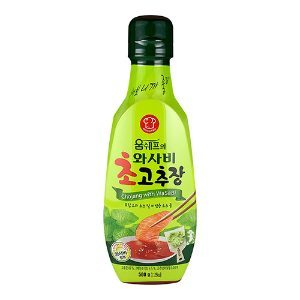 | 움트리 와사비초고추장 500g | 1,460원 | 4,382원 | -67% |
| 대상 순창 컵고추장 50g*6 | 4,110원 | 11,120원 | -63% | |
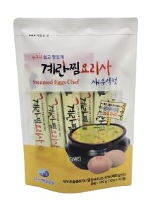 | 계란찜요리사 새우액젓 100g | 1,720원 | 4,400원 | -61% |
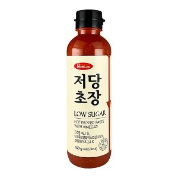 | 움트리 저당초장 450g | 1,860원 | 4,510원 | -59% |
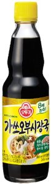 | 오뚜기 가쓰오부시 장국 360 ml | 1,540원 | 3,460원 | -56% |
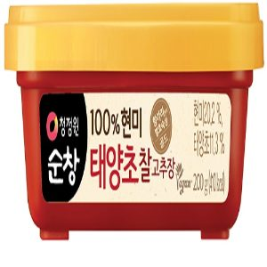 | 대상 순창 찰고추장 200g | 1,390원 | 3,000원 | -54% |
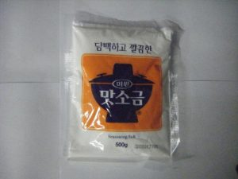 | 대상 맛소금 500G | 1,280원 | 2,680원 | -52% |
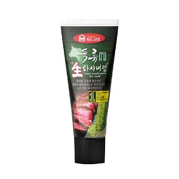 | 움트리 육류n생와사비랑 120g | 2,320원 | 4,770원 | -51% |
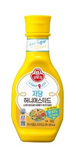 | 오뚜기 저당 허니머스타드 265g | 1,890원 | 3,870원 | -51% |
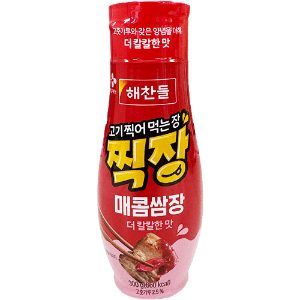 | 씨제이제일제당 고기찍어먹는장 찍장 매콤쌈장 300g | 1,540원 | 3,030원 | -49% |
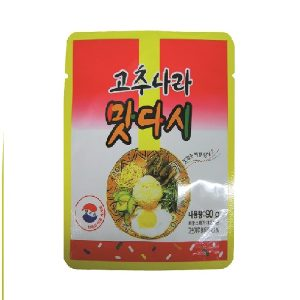 | 동방푸드마스타 고추나라맛다시 90G | 730원 | 1,408원 | -48% |
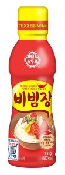 | 오뚜기 비빔장 500g | 2,420원 | 4,625원 | -48% |
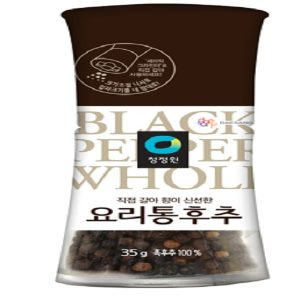 | 대상 청정원 요리통후추그라인더 35g | 3,080원 | 5,820원 | -47% |
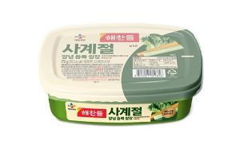 | 씨제이제일제당 사계절쌈장 170g | 760원 | 1,410원 | -46% |
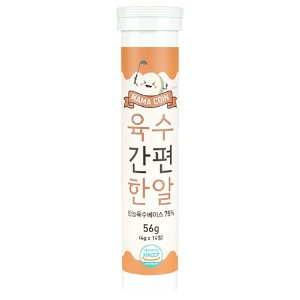 | 토종마을 마마코인 육수간편한알 3.5cmx3.5cmx15cm 56g | 3,030원 | 5,405원 | -44% |
| 대상 3년 묵은 천일염 800g | 4,790원 | 8,250원 | -42% | |
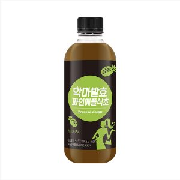 | 팜스빌 악마발효 파인애플식초 500ml | 12,060원 | 20,590원 | -41% |
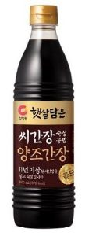 | 대상 햇살담은 씨간장양조간장골드 840ml | 4,380원 | 7,440원 | -41% |
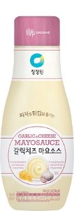 | 대상 청정원 갈릭치즈마요소스 300g | 2,370원 | 3,910원 | -39% |
| 사조대림 순창궁 태양초100%우리햅쌀고추장2kg | 9,990원 | 15,980원 | -38% | |
조미료·장류 말고 다른 것도
더 이상 직접 비교하지 마세요.
군마트 상품을 한곳에 모아 PX 가격과 온라인 가격을 쉽게 비교할 수 있습니다.

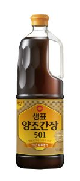
이게 실제 화면이에요. 상품을 누르면 바로 열립니다.
국방가족 분들이 조금이라도 편하게 군마트를 이용하셨으면 하는 마음으로 만들었습니다.
국방가족을 위한 작은 재능기부입니다.